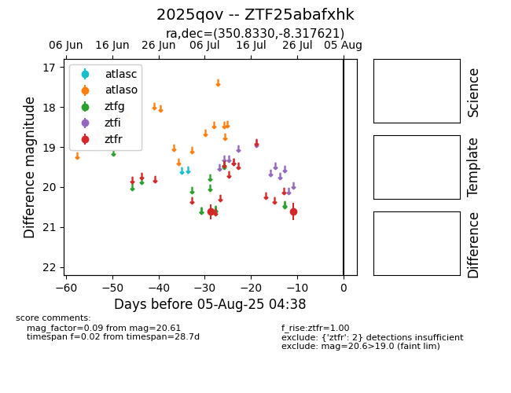

Target 2025qov at 2025-08-05 04:38, see:
FINK: fink-portal.org/2025qov
Lasair: lasair-ztf.lsst.ac.uk/objects/2025qov
ALeRCE: alerce.online/object/2025qov
TNS: wis-tns.org/object/2025qov
YSE: ziggy.ucolick.org/yse/transient_detail/2025qov
alt names
ZTF25abafxhk (ztf,fink)
2025qov (tns,yse)
coordinates:
equatorial (ra, dec) = (350.8330,-8.31762)
galactic (l, b) = (70.8919,-61.92269)
photometry
last ztfr=20.61
2 ztfr detections
